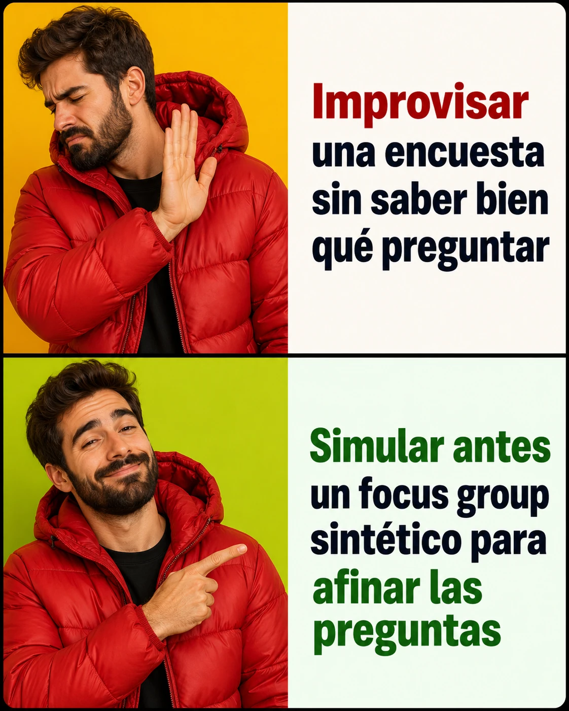

estrategIA #143 ·
Ensayar las preguntas
El contexto
Un focus group es una conversación guiada con un pequeño grupo de personas. La edición probaba una versión simulada con cinco personajes creados por IA para ensayar preguntas antes de hacer una encuesta. Puede ayudar a prepararla, pero esas respuestas inventadas no sustituyen lo que digan ciudadanos reales.
Publicado en: estrategIA #143 — ¿Puede ya la IA simular una conversación ciudadana? Probamos un focus group artificial con cinco perfiles sintéticos
Leer el texto de la imagen
Improvisar una encuesta sin saber bien qué preguntar Simular antes un focus group sintético para afinar las preguntas